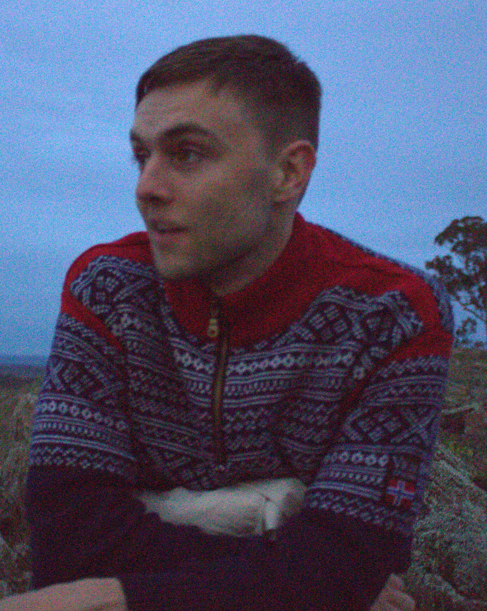

About me
I am a 3rd year PhD candidate in number theory at UNSW Canberra, supervised by Timothy Trudgian and Bryce Kerr. Prior to that, I was an undergraduate at Imperial College London and completed my master's degree at the Norwegian University of Science and Technology under the supervision of Markus Szymik.
My main research interests include
- Cyclotomic fields
- Splitting behaviour of prime ideals across Galois extensions
- Artin's primitive root conjecture.
Previously, I have worked on problems related to finding primitive elements in subsets of finite fields and norm-Euclideanity in cyclic extensions.
Outside mathematics, I enjoy hiking, climbing, programming and boardgames. Terraforming Mars is the best game I have played and it is not close.